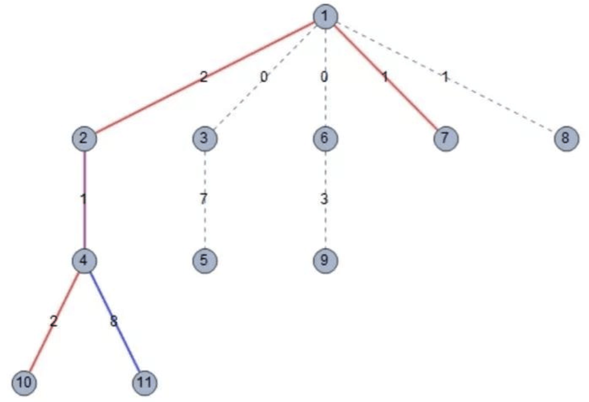

【样例1解释】
这个样例中包含两组数据。这两组数据的城市相同，只是在情报的价值和情报机构的方案上有所不同。城市地图如下：

- 对于第一组数据，方案一中的节点1到节点4的最短路径为$1 \to 2 \to 3 \to 4$，方案二中的节点3到节点5的最短路径为$3 \to 2 \to 1 \to 5$。选择这两种方案需要花费5+8=13的代价，并且每一条边的情报都被收集从而得到1+3+2+8=14的收益，因此总收益减去总代价为14-13=1。
- 对于第二组数据，方案一中的节点1到节点5的最短路径为$1\to5$，方案二中的节点2到节点3的最短路径为$2 \to 3$。这两种方案收集情报的范围没有公共的 边，因此非法，所以这组数据不存在合法方案，应输出F。
【样例2解释】
这一数据中，最优方案为选择第2种和第3种方案。
这组数据的城市地图如下，其中加粗的边表示被情报中心收集情报的边，红色的边表示只被第2种方案的情报中心收集情报的边，蓝色的边表示只被第3种方案的情报中心收集情报的边，紫色的边表示同时被两个情报中心收集情报的边。

【子任务】
表格中的特殊性质如下：
特殊性质$S_1$：对于任意$i,j$，保证$x_i$到$y_i$的最短路径所经过的编号最小的节点不同于$x_j$到$y_j$的最短路径所经过的编号最小的节点；
特殊性质$S_2$：对于任意$i$，保证$x_i$到$y_i$的最短路径所经过的编号最小的节点为节点1。
对于所有的数据，$1\le n \le 5 \times 10^4，0 \le m \le 10^5，0 \le c_i \le 10^9，0 \le v_i \le 10^{10} \times n$。每个测试点中，所有n的和不会超过1000233，所有m的和不会超过2000233。
 Comet OJ
Comet OJ